| Name | Unicode | Glyph | Unicode Name | Description | Aliases |
|---|
| aacute | U+00E1 |  | LATIN SMALL LETTER A WITH ACUTE | =small a, acute accent | |
| Aacute | U+00C1 |  | LATIN CAPITAL LETTER A WITH ACUTE | =capital A, acute accent | |
| acirc | U+00E2 |  | LATIN SMALL LETTER A WITH CIRCUMFLEX | =small a, circumflex accent | |
| Acirc | U+00C2 |  | LATIN CAPITAL LETTER A WITH CIRCUMFLEX | =capital A, circumflex accent | |
| aelig | U+00E6 |  | LATIN SMALL LETTER AE | =small ae diphthong (ligature) | |
| AElig | U+00C6 |  | LATIN CAPITAL LETTER AE | =capital AE diphthong (ligature) | |
| agrave | U+00E0 |  | LATIN SMALL LETTER A WITH GRAVE | =small a, grave accent | |
| Agrave | U+00C0 | 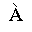 | LATIN CAPITAL LETTER A WITH GRAVE | =capital A, grave accent | |
| aring | U+00E5 |  | LATIN SMALL LETTER A WITH RING ABOVE | =small a, ring | |
| Aring | U+00C5 | 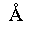 | LATIN CAPITAL LETTER A WITH RING ABOVE | =capital A, ring | angst |
| atilde | U+00E3 |  | LATIN SMALL LETTER A WITH TILDE | =small a, tilde | |
| Atilde | U+00C3 |  | LATIN CAPITAL LETTER A WITH TILDE | =capital A, tilde | |
| auml | U+00E4 |  | LATIN SMALL LETTER A WITH DIAERESIS | =small a, dieresis or umlaut mark | |
| Auml | U+00C4 |  | LATIN CAPITAL LETTER A WITH DIAERESIS | =capital A, dieresis or umlaut mark | |
| ccedil | U+00E7 |  | LATIN SMALL LETTER C WITH CEDILLA | =small c, cedilla | |
| Ccedil | U+00C7 | 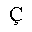 | LATIN CAPITAL LETTER C WITH CEDILLA | =capital C, cedilla | |
| eacute | U+00E9 |  | LATIN SMALL LETTER E WITH ACUTE | =small e, acute accent | |
| Eacute | U+00C9 | 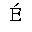 | LATIN CAPITAL LETTER E WITH ACUTE | =capital E, acute accent | |
| ecirc | U+00EA | 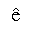 | LATIN SMALL LETTER E WITH CIRCUMFLEX | =small e, circumflex accent | |
| Ecirc | U+00CA |  | LATIN CAPITAL LETTER E WITH CIRCUMFLEX | =capital E, circumflex accent | |
| egrave | U+00E8 |  | LATIN SMALL LETTER E WITH GRAVE | =small e, grave accent | |
| Egrave | U+00C8 |  | LATIN CAPITAL LETTER E WITH GRAVE | =capital E, grave accent | |
| eth | U+00F0 |  | LATIN SMALL LETTER ETH | =small eth, Icelandic | |
| ETH | U+00D0 |  | LATIN CAPITAL LETTER ETH | =capital Eth, Icelandic | |
| euml | U+00EB |  | LATIN SMALL LETTER E WITH DIAERESIS | =small e, dieresis or umlaut mark | |
| Euml | U+00CB |  | LATIN CAPITAL LETTER E WITH DIAERESIS | =capital E, dieresis or umlaut mark | |
| iacute | U+00ED |  | LATIN SMALL LETTER I WITH ACUTE | =small i, acute accent | |
| Iacute | U+00CD | 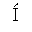 | LATIN CAPITAL LETTER I WITH ACUTE | =capital I, acute accent | |
| icirc | U+00EE | 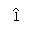 | LATIN SMALL LETTER I WITH CIRCUMFLEX | =small i, circumflex accent | |
| Icirc | U+00CE |  | LATIN CAPITAL LETTER I WITH CIRCUMFLEX | =capital I, circumflex accent | |
| igrave | U+00EC |  | LATIN SMALL LETTER I WITH GRAVE | =small i, grave accent | |
| Igrave | U+00CC |  | LATIN CAPITAL LETTER I WITH GRAVE | =capital I, grave accent | |
| iuml | U+00EF | 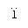 | LATIN SMALL LETTER I WITH DIAERESIS | =small i, dieresis or umlaut mark | |
| Iuml | U+00CF | 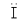 | LATIN CAPITAL LETTER I WITH DIAERESIS | =capital I, dieresis or umlaut mark | |
| ntilde | U+00F1 |  | LATIN SMALL LETTER N WITH TILDE | =small n, tilde | |
| Ntilde | U+00D1 | 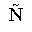 | LATIN CAPITAL LETTER N WITH TILDE | =capital N, tilde | |
| oacute | U+00F3 |  | LATIN SMALL LETTER O WITH ACUTE | =small o, acute accent | |
| Oacute | U+00D3 |  | LATIN CAPITAL LETTER O WITH ACUTE | =capital O, acute accent | |
| ocirc | U+00F4 |  | LATIN SMALL LETTER O WITH CIRCUMFLEX | =small o, circumflex accent | |
| Ocirc | U+00D4 |  | LATIN CAPITAL LETTER O WITH CIRCUMFLEX | =capital O, circumflex accent | |
| ograve | U+00F2 | 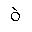 | LATIN SMALL LETTER O WITH GRAVE | =small o, grave accent | |
| Ograve | U+00D2 | 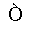 | LATIN CAPITAL LETTER O WITH GRAVE | =capital O, grave accent | |
| oslash | U+00F8 |  | LATIN SMALL LETTER O WITH STROKE | latin small letter o with stroke | |
| Oslash | U+00D8 |  | LATIN CAPITAL LETTER O WITH STROKE | =capital O, slash | |
| otilde | U+00F5 | 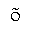 | LATIN SMALL LETTER O WITH TILDE | =small o, tilde | |
| Otilde | U+00D5 |  | LATIN CAPITAL LETTER O WITH TILDE | =capital O, tilde | |
| ouml | U+00F6 | 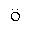 | LATIN SMALL LETTER O WITH DIAERESIS | =small o, dieresis or umlaut mark | |
| Ouml | U+00D6 |  | LATIN CAPITAL LETTER O WITH DIAERESIS | =capital O, dieresis or umlaut mark | |
| szlig | U+00DF |  | LATIN SMALL LETTER SHARP S | =small sharp s, German (sz ligature) | |
| thorn | U+00FE | 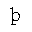 | LATIN SMALL LETTER THORN | =small thorn, Icelandic | |
| THORN | U+00DE |  | LATIN CAPITAL LETTER THORN | =capital THORN, Icelandic | |
| uacute | U+00FA |  | LATIN SMALL LETTER U WITH ACUTE | =small u, acute accent | |
| Uacute | U+00DA |  | LATIN CAPITAL LETTER U WITH ACUTE | =capital U, acute accent | |
| ucirc | U+00FB |  | LATIN SMALL LETTER U WITH CIRCUMFLEX | =small u, circumflex accent | |
| Ucirc | U+00DB |  | LATIN CAPITAL LETTER U WITH CIRCUMFLEX | =capital U, circumflex accent | |
| ugrave | U+00F9 | 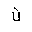 | LATIN SMALL LETTER U WITH GRAVE | =small u, grave accent | |
| Ugrave | U+00D9 |  | LATIN CAPITAL LETTER U WITH GRAVE | =capital U, grave accent | |
| uuml | U+00FC | 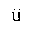 | LATIN SMALL LETTER U WITH DIAERESIS | =small u, dieresis or umlaut mark | |
| Uuml | U+00DC |  | LATIN CAPITAL LETTER U WITH DIAERESIS | =capital U, dieresis or umlaut mark | |
| yacute | U+00FD |  | LATIN SMALL LETTER Y WITH ACUTE | =small y, acute accent | |
| Yacute | U+00DD |  | LATIN CAPITAL LETTER Y WITH ACUTE | =capital Y, acute accent | |
| yuml | U+00FF |  | LATIN SMALL LETTER Y WITH DIAERESIS | =small y, dieresis or umlaut mark | |